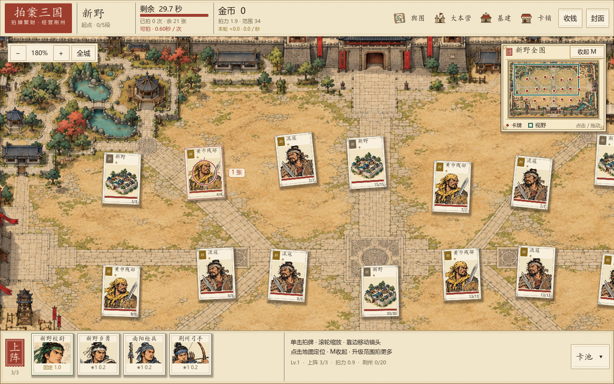
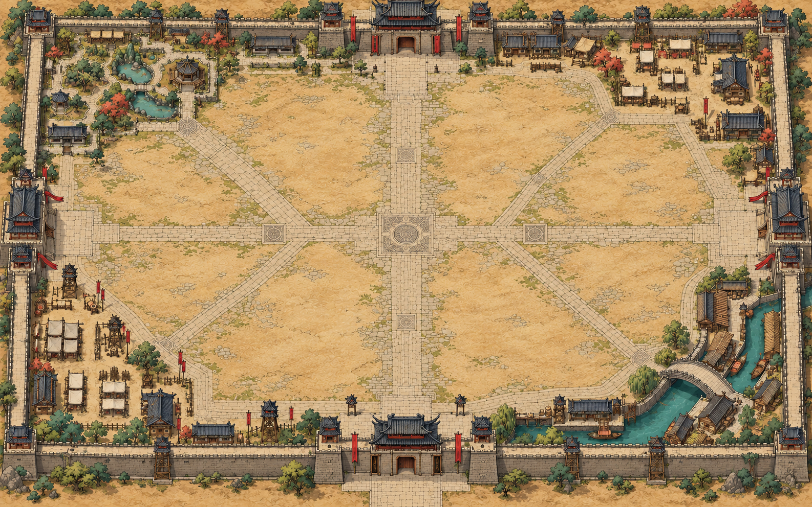

拍案三国 · v2.4 · 2026.10.10
石街、纸牌与落掌的分量
根据已确认的城池效果图强化实机表现：铺石街巷与庭院更有层次，卡牌更清楚，落掌与赚钱有可见反馈。顶部与上阵栏收紧，让更多城池留在画面中。
全宽查看 · 实机前后对比

以上均为 Godot 实机截图。切换按钮比较同类视野，点图查看原尺寸；生成的概念图另列在下方。
这轮强化了什么
城池更有深浅
灰米色石路、赭色土院与外围建筑形成街区，墨线和屋檐阴影更清楚。纸牌落在地上
卡面字与血条更易读，独立纸边和阴影让牌从背景中凸显。落掌与收入相连
掌风、纸屑与铜钱提供短促反馈；收入浮字保持屏幕尺寸，避开目标牌。
灰米色石路、赭色土院与外围建筑形成街区，墨线和屋檐阴影更清楚。纸牌落在地上
卡面字与血条更易读，独立纸边和阴影让牌从背景中凸显。落掌与收入相连
掌风、纸屑与铜钱提供短促反馈；收入浮字保持屏幕尺寸，避开目标牌。
| 部位 | 本轮变化 |
|---|---|
| 城内布局 | 在安全间距内加入轻微错落，保留纸牌之间的空隙，弱化整齐网格感。 |
| 上下界面 | 顶栏约76px，上阵栏约112px。小肖像保留名字与状态；操作提示与进度放在右侧，多携带位可横向查看。 |
| 瞄准反馈 | 范围圆圈和命中计数保留；计数避开目标牌边界，避免压住血条。 |
| 小地图 | 仍在右上角，增加双层纸框与城名题签；M、标题与按钮可收起、展开，点击或拖动定位。 |
| 拍击规则 | 继续使用圆圈单击、共享冷却与金币即时入账；本轮沿用原有升级与经济参数。 |
新生成城图 · 已接入主场地与小地图

卡牌、光标、牌点、视野框与拍击反馈由游戏实时绘制。完整提示词、参考图与素材路径已保存。
查看参考画面

回归与实机验证
| 检查 | 已通过 |
|---|---|
| 城池探索 | 208 / 208 |
| 城池范围 | 230 / 230 |
| 赚钱循环 | 438 / 438 |
| 升级页 | 160 / 160 |
| 卡牌美术 | 5569 / 5569 |
五组回归检查全部通过，共6605项，错误数为0。覆盖分散布局、镜头与地图、范围命中、收入和升级；21张新野开局与180张布局压力检查均保留安全间距。
最终范围230项再次通过；小地图实际GUI六项检查通过，涵盖M键、标题与按钮收放、点击定位、地图区域滚动输入。最终800与720高度实机已目视复核，渲染日志无错误。